Marcos Laporte
Estudiante de Tecnicatura en Programación (UTN Fra)
Legajo 111655
marcoslaporte2015@gmail.com

Color Test
En una matriz de 9 bolas de color hay una que es ligeramente distinta. El jugador debe diferenciar esta del resto la mayor cantidad de veces posibles.